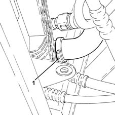
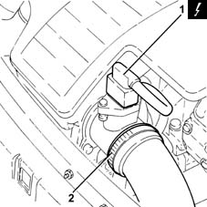
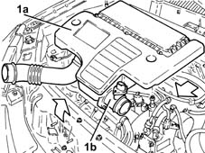
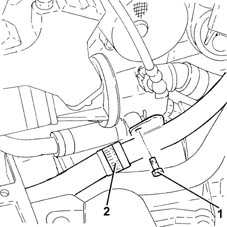
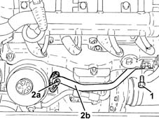
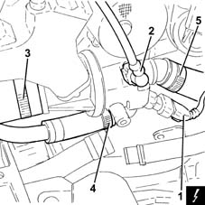
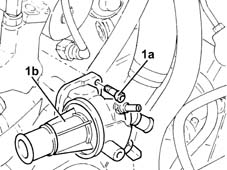
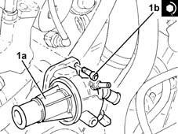

1088C40 thermostat- r + r
- Path
- Procedures > 10 ENGINE > 1088 ENGINE COOLING > 1088C water pump and thermostat > 1088C40 thermostat- r + r
- Kind
- repair procedure (removal / refitting; the operation number is the code)
- Applies to
- engines: 1.3 JTD; all production periods
- Interactive page
- https://sloeber94.github.io/elrnDB-lYpsln/en/#/2429082
Applies to: engines: 1.3 JTD; all production periods
 Removing
Removing
 Refitting
RefittingPosition the vehicle on the ramp.
Proceed with removal .
1. Loosen the band and disconnect the lower radiator coolant outlet hose from the radiator, radiator side.

Applies to: engines: 1.3 JTD; all production periods
Proceed with removal 5530B10 battery - r+r .
Proceed with removal 5530B52 Battery DRIP TRAY/SUPPORT - R.R. .
1. Disconnect the electrical connection from the air flow meter.
 | Name | Connector |
|---|---|---|
1 | Air flow meter |
2. Loosen the band and disconnect the the turbocharger air inlet sleeve from the rigid pipe, air flow meter side.

Applies to: engines: 1.3 JTD; all production periods
1. Remove the air filter (1a) complete with air flow meter (1b) by releasing from the underlying pins and then from the rear fastenings.

Applies to: engines: 1.3 JTD; all production periods
1. Undo the bolts fixing the rigid engine oil vapour recirculation pipe.
2. Loosen the band and disconnect the engine oil vapour recirculation pipe from the rigid pipe.

Applies to: engines: 1.3 JTD; all production periods
1. Undo the bolt fixing the coolant supply pipe to the engine oil heat exchanger to the engine crankcase.
2. Loosen bolts (2a) and disconnect the pipe carrying coolant to the engine oil heat exchanger (2b), heat exchanger side, complete with gasket.

Applies to: engines: 1.3 JTD; all production periods
1. Disconnect the electrical connection from the engine coolant temperature sensor.
| Name | Connector |
|---|---|---|
1 | Engine temperature sender unit |
2. Disconnect the quick-release fitting of the coolant return pipe to the engine coolant reservoir, thermostat side.
3. Loosen band and disconnect the upper coolant inlet hose to the radiator thermostat side.
4. Loosen the band and disconnect the engine oil heat exchanger flexible coolant supply pipe, rigid pipe side.
5. Loosen the band and disconnect the coolant supply pipe to the water/exhaust gas heat exchanger for the E.G.R. system, thermostat side.

Applies to: engines: 1.3 JTD; all production periods
1. Undo the bolts (1a) and remove the thermostat (1b) complete with O-Ring.

Applies to: engines: 1.3 JTD; all production periods
Refitting
Removing1. Refit in its seating the thermostat (1a) complete with O-ring and secure it with its bolts (1b) to the specified torque.
 | Fastening | Component | Ø | Value (daNm) |
|---|---|---|---|---|
1b | Bolt | THERMOSTAT | M8 | (Lower cylinder head side) 2.3 ÷ 2.8 |

Applies to: engines: 1.3 JTD; all production periods
Connect the engine coolant supply pipe to the EGR system water/exhaust gas heat exchanger, thermostat side and tighten the band.
Connect the coolant supply pipe to the engine oil heat exchanger, thermostat side, and tighten the band.
Connect the upper coolant inlet hose to the radiator, thermostat side, and tighten the band.
Connect the quick-release fitting on the coolant return pipe to the engine coolant reservoir, thermostat side.
Connect the electrical connection to the engine coolant temperature sensor.
Connect the coolant supply pipe to the engine oil heat exchanger, heat exchanger side, complete with seal, then tighten the bolts.
Tighten the bolt fixing the coolant supply pipe to the engine oil heat exchanger to the cylinder block/crankcase.
Connect the engine oil vapour recirculation hose to the rigid pipe and tighten the band.
Tighten the bolts securing the engine oil vapour recirculation rigid pipe.
Replace the air filter, complete with air flow meter, in its housing.
Connect the air intake sleeve to the turbocharger, air flow meter side, and tighten the band.
Connect the electrical connection to the air flow meter.
Proceed with refitting 5530B52 Battery DRIP TRAY/SUPPORT - R.R. .
Proceed with refitting 5530B10 battery - r+r .
Connect the lower coolant outlet hose from the radiator, radiator side, and tighten the band.
Refill the engine cooling system with coolant 0010T20 coolant change .
Proceed with refitting .
Remove the car from the ramps.